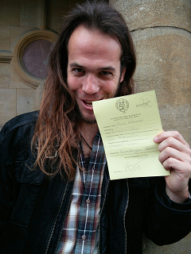

About me
I'm a mathematician interested in Topological Quantum Field Theory. In my research I look for ways of bridging the gap between Pure Mathematics and Physics, while having as much fun with Topology as possible.

Currently, I'm a DPhil (that's Oxfordian for PhD) student in Pure Mathematics at the University of Oxford, working with Chris Douglas. I'm a member of University College. Before this, I was a Master student in both Mathematics and Theoretical Physics at the University of Utrecht, where I wrote my Master's thesis under the supervision of André Henriques and Gleb Arutyunov. And before that, I did my Bachelor's in both Mathematics and Physics at the University of Utrecht.
My full CV can be found here.
Email:
wasserman_at_maths.ox.ac.uk
Department Webpage:
www.maths.ox.ac.uk/people/thomas.wasserman
Research Interests
My research focuses on:
- Topological Quantum Field Theory
- Fusion Categories
- Cobordism Categories
- Topological Phases of Matter